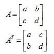

<div style="clear:both; border-bottom: solid 3px #5badee;">
    <h1 class="PageTitle1"><span id="ctl00_ctl00_ContentPlaceHolder1_TextContent_lbTitle">The Transpose of a Matrix</span></h1>
</div>
<div style="width: 618px; padding-top:10px; padding-bottom: 10px; clear:both;">
                <span id="ctl00_ctl00_ContentPlaceHolder1_TextContent_lbPageContent" class="formulaCss">The transpose of a matrix is formed by convert its columns as rows, for example for matrix <span style="font-style: italic">A</span> of size m x n, we have:<br>
<br>
<span style="font-style: italic">A</span><span style="vertical-align: super">T</span> = <span style="font-style: italic">A<span style="vertical-align: sub">nm</span></span><br>
<br>
For example:<br>
<br>
<br>
 </span>
        </div>